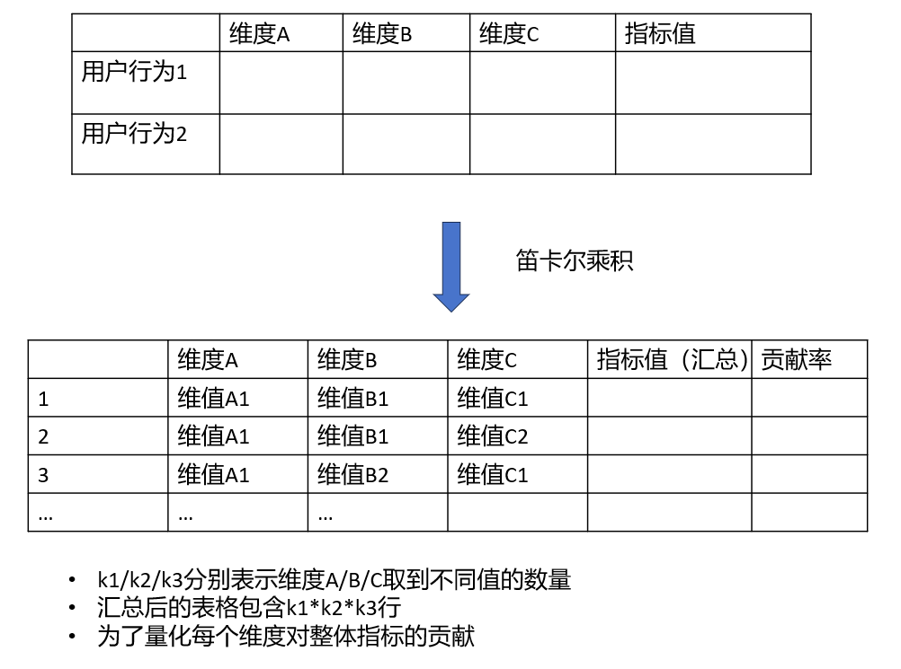
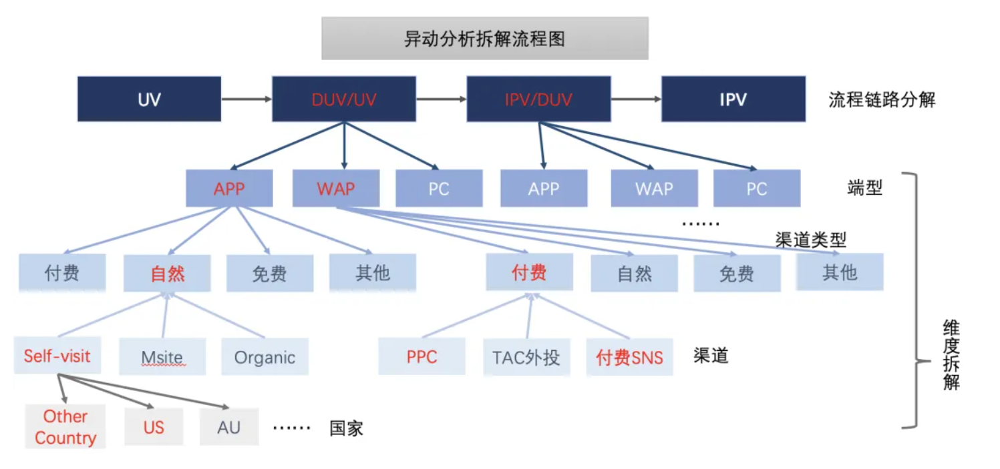

graph TD
A[数据分析方法] --> B[描述性分析]
A --> C[诊断性分析]
A --> D[预测性分析]
A --> E[规范性分析]
B --> B1[指标计算]
B --> B2[数据分布]
B --> B3[趋势分析]
C --> C1[维度下钻]
C --> C2[异常检测]
C --> C3[根因分析]
D --> D1[机器学习预测]
D --> D2[时间序列预测]
D --> D3[因果推断]
E --> E1[优化算法]
E --> E2[决策树]
E --> E3[仿真模拟]
2 数据分析方法
2.1 概览
数据分析的本质，在于通过系统性方法解构量化世界，驱动明智决策。其核心流程涵盖目标定义、数据获取、清洗处理、深度分析、可视化呈现与洞见传达。分析方法体系包含四大支柱：描述性分析（揭示“发生了什么”，聚焦核心业务指标的度量与监控）、诊断性分析（探究“为何发生”，运用细分、对比、漏斗、归因剖析指标异动）、预测性分析（预判“未来趋势”，基于统计与模型进行关键指标预测）、规范性分析（指导“如何行动”，提供优化决策建议）。贯穿始终的核心，是对业务指标的深刻理解、精准定义、多维度拆解（MECE原则）、归因追溯与健康度评估——正是这种围绕指标的解码能力，将数据转化为驱动业务增长的导航仪。
数据分析过程中常见的tradeoff（效率与规模的互斥性）：
收益ROI = LT × ARPU / CPA
LT（用户生命周期）：用户留存时长
ARPU（单用户平均收入）
CPA（获客成本）
本质：衡量单用户的价值回报效率。
规模DAU = DNU × LT + RDAU
DNU（当日新增用户）
RDAU（留存活跃用户）
本质：反映用户池的规模稳定性（新增驱动短期爆发，留存决定长期稳态）
2.2 本章参考资料
2.3 核心数据分析方法
- 按分析目标与数据特性划分
- 按技术复杂度分层
| 层级 | 方法类别 | 典型技术 | AB测试应用 |
|---|---|---|---|
| 基础层 | 统计分析 | 描述统计、假设检验、置信区间 | 实验效果评估 |
| 中级层 | 多变量分析 | 回归分析、ANOVA、因子分析 | 多变量实验设计 |
| 高级层 | 机器学习 | 聚类、分类、深度学习 | 用户分群与预测 |
| 战略层 | 因果推断 | 倾向得分匹配、双重差分 | 长期效果评估 |
2.3.1 描述性分析：发生了什么？
目的：总结历史数据，描述现状
常用方法：
指标计算：计算核心业务指标（DAU/WAU/MAU/GMV/APRU/CAC/LTV/转化率/留存率/跳出率）
数据聚合：按时间（日/周/年）、地区、用户群、产品类别等维度汇总数据（SUM/AVG/COUNT/MAX/MIN）
查看数据分布：了解数据的集中趋势（均值、中位数、众数）和离散程度（标准差、方差、四分位距）
可视化：柱状图、饼图、折线图、散点图、直方图、箱线图
2.3.2 诊断性分析：为什么会发生？
目的：探究现象背后的原因，找出问题的根源或成功的关键因素
常用方法：
细分：将整体数据拆分到更细的维度（用户分群、渠道细分、产品功能细分），找出差异点和关键驱动因素
对比分析：
时间对比：同比、环比、特定时间对比
群体对比：A/B测试、实验组VS对照组、不同用户群体（新/老、不同等级用户）、不同渠道、不同产品版本
目标对比：实际值VS预算/目标值/行业基准
漏斗分析
目的：追踪用户在完成一个多步骤流程（如注册、下单、支付）中的转化和流失情况
核心：识别转化瓶颈、优化关键步骤
业务应用：优化用户旅程、提升转化率（注册购买、购买转化、转化激活）
相关性分析：
目的：探索两个或多个变量之间时是否存在关联关系（non-causal）
方法：计算相关系数、scatter观察
注意相关性并不等于causal！需要结合业务逻辑进行判断
归因分析
目的：确定用户转化行为（注册、购买）应归功于哪些营销渠道或触点
模型：首次点击、末次点击、线性归因、时间衰减归因、基于位置的归因等等。取决于业务逻辑。
根本原因分析： 使用5why、鱼骨图等工具深入挖掘问题根源
业务应用：分析业绩波动原因、理解用户流失根源、评估营销活动效果、优化产品功能
2.3.3 预测性分析：未来有可能会发生什么？
目的：基于当前现有的数据利用统计/机器学习模型预测未来趋势或者结果
常用方法
时间序列分析：分析数据随时间变化的模式（趋势、季节性、周期性），用于预测（如销量预测、流量预测）。常用模型：移动平均、指数平滑、ARIMA。
回归分析：
目的：建立解释自变量和因变量之间的定量关系模型，用于预测和解释影响
类型：线性回归、逻辑回归（预测概率/分类）、多元回归
业务应用：预测销售额（基于广告投入、市场活动等）、预测用户流失概率、识别关键驱动因素（哪些因素对目标的影响最大）
分类与聚类：
分类：预测离散结果（如用户是否会流失？邮件是否是垃圾邮件？）常用算法：逻辑回归、决策树、随机森林、SVM、LSTM
聚类：将相似是数据点分组（无监督学习），用于用户分群、市场细分、异常检测。常用算法：K-means、层次聚类
预测模型评估指标：准确率、精确率、召回率、F1Score、AUC、RMSE
业务应用：销售预测、需求预测、用户流失预警、风险评估（信用评分）、个性化推荐（基于预测偏好）
2.3.4 规范性分析：应该怎么做？
目的：基于预测结果，提供最优行动建议。这是分析的终极目标。
常用方法：
优化算法：在给定约束条件下（如预算、资源）、寻找最大化（如利润、转化）或最小化（如成本、风险）目标函数的最佳方案（如线性规划、整数规划）。
模拟：构建模型模拟不同决策方案下的可能结果（如蒙特卡洛模拟）
决策树/推荐系统：直接给出基于规则或模型的行动建议
业务应用：最佳定价策略、营销预算分配、库存优化、供应链管理、个性化最佳行动建议
2.4 业务中指标分析的核心方法
当一个指标波动时，我们首先需要从业务视角判断其波动是否异常，即异动检测，其次判断异常背后的原因是什么，即异动归因。
2.4.1 指标体系的层级
北极星指标：公司/产品最核心的单一指标，体现核心价值（如社交软件的日活、电商的GMV）
一级指标（核心KPI）：支撑一级指标的更具体指标（如DAU、转化率、平均订单价值、用户留存率）
二级指标：支撑一级指标的更具体指标（如注册转化率、购物车转化率、支付成功率、次日留存率）
三级指标/过程指标：更细粒度的操作指标，影响二级指标（如页面加载时间、按钮点击率、客服响应时长）
2.4.2 关键指标分析方法
指标定义与计算口径：
核心：明确指标的明确定义和一致的计算逻辑（公式、数据源、时间范围、排除规则）
常见公式（待补充）
指标监控与追踪：
仪表盘：建立核心指标的可视化仪表盘、定时/定期监控
时间序列分析：绘制指标趋势图（日/周/年），识别异常波动、周期性、趋势性
指标归因
贡献度分析：确定不同因素（如渠道、活动、产品功能）对整体指标变化的贡献大小
增量分析：评估某个特定动作（如上线新功能、开展营销活动）带来的指标净增量（通过AB实验实现）
指标健康度评估
目标对比：实际值VS目标值/预算值
基准对比：与历史同期对比（同比）、上期（环比）、行业平均水平或优秀竞争对手对比
合理性判断：基于业务常识判断指标值是否合理（如转化率不可能超过100%）
算法归因 均待补充
Adtributor：
决策树：
内外部分析：
- 企业内部：分为获客（渠道质量低、活动获取非目标用户）、满足需求（新功能改动引发某类用户不满）、提活手段（签到等提活手段没达成目标、产品自然使用周期低导致上次获得的大量用户流失）
graph TD
A[提活手段ROI下降] --> B{原因分类}
B --> B1[激励不足]
B --> B2[触达低效]
B --> B3[用户生命周期衰竭]
B1 -->|签到奖励价值＜用户时间成本| C1[奖励金额需提升2倍]
B2 -->|Push打开率＜5%| C2[优化推送时段+文案个性化]
B3 -->|次月留存率＜10%| C3[重建用户成长体系]
- 企业外部：PEST宏观经济环境分析# 宏观经济指标与业务表现的回归分析示例
import statsmodels.api as sm
import pandas as pd
# 数据准备（月度维度）
df = pd.DataFrame({
'失业率': [3.5, 4.0, 4.5, 5.0], # 自变量X
'GMV': [500, 480, 450, 420] # 因变量Y
})
# 建立线性回归模型
X = sm.add_constant(df['失业率'])
model = sm.OLS(df['GMV'], X).fit()
print(model.summary()) # 查看失业率对GMV的影响系数及显著性输出结论：若失业率每上升1%，GMV下降约60万（p<0.05），需调整产品策略（如增加平价SKU）。
- 1. **发现问题**：Q3客单价同比下降15%
- 2. **PEST归因**：
- 经济(E)：CPI上涨导致消费降级
- 社会(S)：小红书"平替"内容阅读量↑200%
- 3. **内部验证**：
- 高价商品转化率↓（-25%）
- "性价比"搜索词占比↑（+40%）
- 4. **决策建议**：
- 上线"平价专区"，价格带下移20%
- 与KOL合作推广"大牌平替"内容 指标联动分析
平衡计分卡思想：理解不同指标之间的相互关系和平衡关系（如追求短期GMV增长可能牺牲利润或用户体验）
相关性与因果探索：分析核心指标与其他指标的相关性（如用户活跃度与留存率、客单价与购买频次），并探索是否causal
指标拆解
将目标指标定义为\(Y\)，波动为\(\Delta Y \% = \frac{Y^1-Y^0}{Y^0}\)，其中\(Y^1\)是当月的数据，\(Y^0\)为上个月（同比/环比）的数据。我们需要研究组成\(Y\)的集合{\(X\)}对于 \(\Delta Y\)的贡献：\(\Delta Y \% = C_{X_1} +C_{X_2}+C_{X_3}+...\)，其中\(C_{X_i}\)表示指标（或维度）对于\(\Delta Y \%\)的贡献度（Contribution）。
另外，贡献的拆解算法是根据组合的不同方式来决定的，集合{\(X\)}组成\(Y\)的方式包括：
加法\(Y = X_1+X_2+X_3\)（例如各渠道uv加和）
乘法\(Y=X_1 \cdot X_2 \cdot X_3\)（例如已知rpm（每千次展示收入） = cpc（单次点击成本）*ctr（点击率）下，算出cpc、ctr分别对rpm的贡献）
比率型指标\(Y = \frac{P}{S}=\frac{\sum p_{X_i}}{s_{X_i}}\)（例如各广告计划的cpf（Cost Per Follower 每获得一个新粉丝的成本）或者各个渠道的cpuv（Cost Per Unique Visitor，单个唯一访问用户成本））
MECE原则：相互独立，完全穷尽。将复杂指标拆成多个相互独立且穷尽的子指标
下面我们要介绍贡献率的拆解方法：
- 加法拆解：
已知\(Y=\sum_i X_i\)，目标波动\(\Delta Y\% = \frac{Y_1-Y_0}{Y_0} = \frac{\sum_i X_i^1 - \sum_i X_i^0}{Y^0} = \frac{\sum_i(X_i^1-X_i^0)}{Y^0} =\frac{\sum_i\Delta X_i}{Y^0}\)，由于贡献等于\(C_{X_i} = \frac{X_i^1-X_i^0}{Y^0}=\frac{\Delta X}{Y^0}\)，因此我们得到\(\Delta Y\% = \sum C_{X_i}\)
针对绝对值指标的维度拆解都是加法拆解。绝对量指标的同比/环比变化，就是各个分指标变化的加权求和，例如访问uv总和等于各渠道uv加总，那么总uv的变化下钻贡献率等于各渠道分别的变化除上月的总uv数。
- 乘法拆解：
已知\(Y = \prod_i X_i\)，目标波动\(\Delta Y\% = \frac{Y^1-Y^0}{Y^0}\)，贡献等于\(C_{X_i} = \frac{L(Y^1,Y^0)\cdot ln(\frac{X^1}{X^0})}{Y^0}\)，其中\(X^1\)是当月的数据，\(X^0\)为上个月（同比/环比）的数据，\(L(Y^1,Y^0)\)为平均对数权重，\(L(Y^1,Y^0)=\frac{Y^1-Y^0}{ln(Y^1)-ln(Y^0)}=\frac{\Delta Y}{ln(Y^1)-ln(Y^0)}\)
举例漏斗拆解：借助用户动线，拆解指标。
以全站商品详情页的浏览量ipv为例，其变动涉及流量、承接页到商品详情页的转化(uv-d转化)、商品 详情页用户人均浏览量（人均pv），分别对应了用户增长、搜推场景承接以及私域用户活跃度等业务域或用户行为指标。借此对全站ipv的构成链路进行静态乘法拆解 \[IPV = \underbrace{\text{UV}}_{\text{流量规模}} \times \underbrace{\left(\frac{\text{进入详情页UV}}{\text{总UV}}\right)}_{\text{UV→D转化率}} \times \underbrace{\left(\frac{\text{IPV}}{\text{进入详情页UV}}\right)}_{\text{人均PV}}\]
同时，我们可以计算各乘积因子对目标指标变化的贡献率\(C_i\)，衡量三个指标的重要性：
\[C_{uv} = L(ipv^1, ipv^0) \cdot \ln \left(\frac{uv^1}{uv^0}\right)\]
\[C_{uv-d \text{ rate}} = L(ipv^1, ipv^0) \cdot \ln \left(\frac{uv-d \text{ rate}^1}{uv-d \text{ rate}^0}\right)\]
\[C_{ipv \text{ per } duv} = L(ipv^1, ipv^0) \cdot \ln \left(\frac{ipv \text{ per } duv^1}{ipv \text{ per } duv^0}\right)\]
- 比率型指标拆解
已知\(Y = \frac{S}{P} = \frac{\sum_i s_i x_i}{\sum_i p_i x_i}, \quad P_i = \frac{p_i x_i}{\sum_i p_i x_i}, \quad S_i = \frac{s_i x_i}{\sum_i s_i x_i}, \quad Y_i = \frac{s_i}{p_i}\)，当分析比率指标进行维度下钻，分项对整体的贡献，受两个因素的影响：
一是分项的相对数指标波动贡献，即当期与基期的分项规模一致时，分项指标带来的变化：分项的指标波动贡献\(A_{X_i}\)=指标的同比变化值*上期基数占比，即\(A_{X_i} = (Y_i^1 - Y_i^0) \times P_i^0\)
二是分项的结构变化，即当期与基期分项规模变化部分的指标变化：分项的结构变化\(B_{X_i}\)=占比同比变化值*（分项本期指标-整体上期指标），即\(B_{X_i} = (P_i^1 - P_i^0) \times (Y_i^1 - Y^0)\)
最后\(C_{X_i} = \frac{A_{X_i}+B_{X_i}}{Y^0}\)
举例：以承接页到商品详情页的转化率为例（uv-drate），\(rate = \frac{duv}{uv}\)，流量渠道可以分为付费、免费、自然、其他，每种渠道的uv-d转化率为\(rate_i = \frac{duv_i}{uv_i}\)，各渠道的商详页访问人数(duv)占比用\(DUV_i = \frac{duv_i}{duv}\)来表示，各渠道人数（uv）占比用\(UV_i = \frac{uv_i}{uv}\);如果uv-d转化率同比下跌，我们想定位出哪个渠道出现了问题,各渠道的贡献\(C_i\)将如下计算： \[ A_i = (rate_i^1 - rate_i^0) \cdot uv_i^0 = \Delta rate_i \cdot uv_i^0 \] \[ B_i = (uv_i^1 - uv_i^0) \cdot (rate_i^1 - rate_i^0) = \Delta uv_i \cdot (rate_i^1 - rate_i^0) \] \[ C_i = \frac{A_i + B_i}{rate_i^0} \]
- 实例应用
根据上文提到的不同指标的计算方法，支持全类型指标下钻求贡献的场景，可根据先验业务输入搭建多层的归因逻辑模型，层层下钻，最终将指标波动定位。 
以某日ipv同比下跌的异动分析为例：
第一层拆解，借助用户动线，将存在异动变化的指标ipv构成链路进行乘法拆解，如下： \[IPV = \underbrace{\text{UV}}_{\text{流量规模}} \times \underbrace{\left(\frac{\text{进入详情页UV}}{\text{总UV}}\right)}_{\text{UV→D转化率}} \times \underbrace{\left(\frac{\text{IPV}}{\text{进入详情页UV}}\right)}_{\text{人均PV}}\] 这里帮助我们定位到可能导致指标异动的关键节点：是uv的问题？转化的问题？还是人均ipv的问题？
第二层拆解，对关键节点处的多个维度进行下钻，将问题定位到某些维度的某些水平上，同时避免陷入辛普森悖论等陷阱。例如如果是转化的问题，究竟是哪个渠道的转化少了？
下图是“异动分析拆解流程图”，是根据先验的业务输入搭建的归因模型，根据其框架得以进行贡献率拆解与问题定位：

假设红色表示的链路指标或维度代表对总之下跌贡献率较大，经过一层一层的拆解定位到app端自然流量中转化的降低导致总转化下降。
基于流量跨端调控以及流量预算减投的业务背景，我们现将 对ipv贡献最大的nv/duv根据端型、流量渠道类型、流量渠道、国家四个维度进行贡献率拆解。
在本实例中，通过本文对贡献率拆解方法与业务人工看数得到的问题定位基本一致，该方法可以实现异动贡献率量化与提效的目的，具体核心结论如下：
结论一（第一层拆解）：ipv下降主要影响因素是uv-d转化率的波动
结论二（第二层拆解）：uv-d比率的波动主要由APP端和WAP端导致，两种端型贡献持平
结论三（第3/4层拆解）：APP端的自然流量和WAP端的付费流量是uv-d波动的主要贡献维度
结论四（第五层拆解）：APP端Self-visit中美国对uv-d比率的波动贡献较大
通过建立多层归因下钻维度模型，用自动化的方式层层剥析，从而能全面准确地归因到某个维度。
- 维度拆解：按用户属性（新/老、地域、渠道来源）、产品属性（品类、价格段）、时间（小时、日、周）等维度拆解指标，寻找差异
2.5 CASE
Note
Q：现在有一个游戏测试的环节，游戏测试结束后需要根据数据提交一份slides，如何安排PPT？包括什么内容？
A:AARRR模型
Acquistion获取用户：我们的用户群体是谁？用户规模多大？
Activation激活：游戏是否吸引玩家？什么渠道获取的用户有质量（根据次日留存率、首日停留时长等）
Retention留存：用户能否持续留存？哪些用户可以留存
Revenue转化：用户游戏行为能否进行转化？能否持续转化？
Refer自传播：用户是否会向他人推荐游戏？如何激励用户向他人推荐？K因子是否大于1？
Note
Q：某业务部门在上周结束了为期一周的大促，作为业务对口分析师，需要你对活动进行一次评估，你会从哪些方面进行分析？
A：
目的：确定大促目的是什么。拉新？促活？清库存？
搭建指标体系：根据目的搭建
效果评估：
自身比较：活动前与活动中比较
与预定目标比较
与同期其他活动比较
与往期同类活动比较
持续监控：
检查活动后情况，避免透支消费的情况
如果是拉新活动，根据后续数据检验新客质量
Note
Q：次日用户留存率下降了5%怎么分析？
A：
两层模型：对用户进行细分，包括新老、渠道、活动、画像等多个维度，然后分别计算每个维度下不同用户的次日留存率。通过这种方法定位到导致留存率下降的用户群体
内外部分析
Note
Q：一个网站销售额变低，你要从哪几方面去考量呢？
A：
首先定位到位置：
用户（画像、来源渠道、新老、地区等）
产品或栏目
访问时段
定位到位置后，进行问题拆解，关注目标群体中哪个指标下降导致网站销售额下降：
销售额 = 入站流量下单率客单价
入站流量 = \(\sum\)各来源流量*转化率
下单率 = 页面访问量*转化率
客单价 = 商品手术量*商品价格
确定源头后，进行分析
Note
Q：用户流失的分析
A：
两层模型：
细分用户、产品、渠道，看到底是哪里用户流失了。注意由于是用户流失问题，所以这里细分用户时可以细分用户处在生命周期的哪个阶段
指标拆解：用户流失数量 = \(\sum\)各群体用户数量*流失率。拆解，看是因为到了这个阶段的用户数量多了（比如大部分用户到了衰退期），还是这个用户群体的流失率比较高
内外部分析：
内部：新手上手难度大、收费不合理、产品服务出现重大问题、活动质量低、缺少留存手段、用户参与度低等等
外部：市场、竞争对手、社会环境、节假日等
Note
Q：新老用户流失有什么不同：
A：
新用户
原因可能是非目标用户（刚性流失）、产品不满足需求（自然流失）、产品难以上手（受挫流失）和竞争产品影响（市场流失）
我们要考虑如何在较少的数据支撑下做流失 用户识别，提前防止用户流失，并如何对有效的新用户进行挽回
老用户
原因可能是用户生命周期衰退期（自然流失）、过渡拉升ARPU导致低端用户驱逐（刚性流失）、社交蒸发难以满足前期用户需求（受挫流失）和竞争产品影响（市场流失）
老用户有更多的数据，更容易进行流失用户识别，做好防止用户流失更重要。当用户流失之后，要考虑用户生命周期剩余价值，是否需要进行挽回。
Note
Q：我们有一款游戏收入下降了，你怎么分析？
A：
两层模型：细分用户、渠道、产品，看到底是哪里的收入下降了
指标拆解：收入 = 玩家数量 * 活跃用户占比 * 付费转化率 * 付费次数 * 客单价
进一步细分：玩家数量 = 老玩家数量 * 活跃度 + 新玩家数量 * 留存率，然后对各个指标与以往的数据进行对比，发现是哪些环节导致收入下降
分析原因：
内部：产品变化、促活活动、拉新活动、定价策略、运营策略、服务器故障等等
外部：用户票号变化、市场环境变化、舆论环境变化、竞争对手行为、外部渠道变化等等
怎么做：基于乘法模型，可以采用上限分析，从前往后依次将指标提升到投入足够精力（假设优先分配人力、经费与渠道）后的上限。找到数值提升最快的那个阶段，就是我们提高收入的关键任务
Note
Q：抖音日活下降了10%
A：
- 拆分维度：
graph LR
A[常见拆分维度] --> B(拆用户: 新/老用户);
A --> C(拆登录平台: ios/安卓);
A --> D(拆版本: 新/老版本);
A --> E(拆入口: 点击图标进入/push调起 等);
A --> F(拆登录渠道: app/小程序/pc端/m端等);
A --> G(拆区域: 省份、国家等);
A --> H(拆时间: 淡旺季、日夜、产品周期性等);
计算贡献率
分析原因
graph LR
A[内部原因] --> B(产品);
A --> C(技术);
A --> D(运营);
A --> E(统计口径);
B --> B1(功能调整);
B --> B2(策略调整);
B --> B3(样式改版);
B --> B4(版本缺陷);
C --> C1(接口不稳定);
C --> C2(系统故障);
C --> C3(APP异常);
C --> C4(数据传输、存储、清洗有问题);
D --> D1(运营策略);
D --> D2(push效果);
D --> D3(拉新渠道);
D --> D4(投放推广);
D --> D5(活动);
E --> E1(业务逻辑变更);
E --> E2(指标计算方式变更);
graph LR
A[外部原因] --> B(政治);
A --> C(经济);
A --> D(社会);
B --> B1(政策影响、互联网金融监管);
C --> C1(竞品APP数据);
D --> D1(假期效应：开学季、暑假、四大节日、当地节日);
D --> D2(热点事件：如世界杯、突发热点、爆款IP);
- 验证假设
2.6 费米问题
费米问题（Fermi Problem）是一种通过逻辑拆解、合理估算和数量级推理，在有限信息下快速解决复杂量化问题的方法论，由诺贝尔物理学奖得主恩里科·费米提出。
以估算芝加哥钢琴调音师数量为例：\(\text{调音师数量} = \frac{\text{年总调音需求}}{\text{单名调音师年服务能力}}\)，然后逐层估算：
| 子问题 | 估算逻辑 | 取值 |
|---|---|---|
| 芝加哥人口 | 美国第三大城市 | 300万 |
| 家庭平均规模 | 典型欧美家庭 | 3人/户 |
| 钢琴拥有率 | 中产家庭约10%拥有 | 10户有1台 |
| 钢琴总数 | =300万/3人/户 × 1/10 | 10万台 |
| 年调音频次 | 每年需调音1次 | 1次/台·年 |
| 年总调音需求 | =10万台 × 1次/台·年 | 10万次 |
| 单次调音耗时 | 包括交通、调音 | 2小时 |
| 日有效工作时长 | 扣除交通、休息 | 5小时/天 |
| 年工作日 | 250天 (扣除假期) | 250天 |
| 单人年服务能力 | =5小时/天 ÷ 2小时/次 × 250天 | 625次 |
综合计算\(\text{调音师数量} = \frac{100,000}{625} = 160人\)，实际上登记调音师约200人，误差20%。
2.6.1 互联网场景应用案例——外卖平台每日需要多少骑手？
\(\text{骑手数} = \frac{\text{日订单量} × \text{单均配送时长}}{\text{骑手日均有效工时}}\)，逐层估计
| 参数 | 估算逻辑 | 取值 |
|---|---|---|
| 目标城市人口 | 一线城市 | 2000万 |
| 点外卖渗透率 | 年轻人占比×点外卖习惯 | 20% |
| 人均周订单 | 高频用户3单/周，低频1单/周 | 1.5单/周·人 |
| 日订单量 | =2000万×20%×1.5÷7 | 85.7万单 |
| 单均配送时长 | 取餐+交通+交付 | 30分钟 |
| 骑手日均有效工时 | 10小时（含等待时间） | 600分钟 |
| 骑手日均配送单量 | =600÷30 | 20单 |
| 所需骑手数 | =85.7万 ÷ 20 | 42,850人 |
2.6.2 在异动分析中的应用——DAU突然下跌30%
\(\Delta DAU = \Delta \text{新用户} + \Delta \text{老用户留存} + \Delta \text{回流用户}\)
估算渠道影响：若主要渠道A占新客60%，其CPU升50%，则新客减少约30%
功能改版的影响：改版覆盖40%用户，该群日次留率降15%，则DAU降约6%
综合判断：实际跌幅为36%